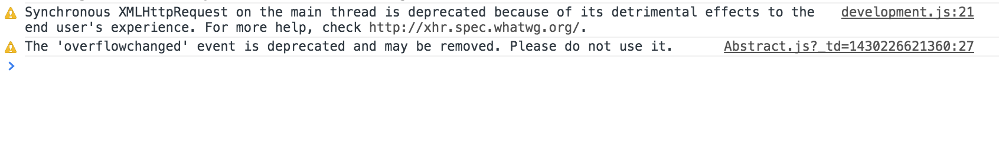

Trevor Brindle


I’m probably not the only one who, starting last September started seeing deprecation warnings while developing my Sencha Touch app. Turns out, the Chromium project wants to deprecate the overflowchanged event in Blink/Chrome. They cite that it is a non-standard event with near zero use, however Mozilla has a rough equivalent set of events underflow and overflow. This deprecation is a bit of a problem for Sencha because the framework uses this event to detect element resizes and paints in Chrome.
This is especially important, apparently, for the list component which doesn’t get a height set, or any item components added without this event functioning. Imagine my surprise the other day when checking something in my Chrome Canary installation (Chrome 44) and Beta (Chrome 43) that my app’s lists didn’t work at all; in fact, all Sencha apps I tried with lists were broken. Noticeably absent from the console was the deprecation warning I had been ignoring for all these months.

Sencha is pretty quiet about this, and I’ve only found two posts so far, here and here talking about this. That’s very strange to me, considering this bug is also in their preview ExtJS 6 SDK. Fortunately, Sencha ships with several methods of detecting resizes and paints to support different browsers. Unfortunately, the other viable solution attaches to a scroll listeners, notoriously poor for performance. I haven’t noticed a huge difference, but you might.
Given this is a browser standardization issue for chromium, I doubt they are going to reimplement it before the stable branch, but we have a few weeks to figure that out.
In the mean time, the solution for Sencha is fairly simple, and involves overriding two if statements in two framework files, to force Sencha to use the alternative methods. Post/Tweet me if you see any side effects, or perhaps have a better method. (Updated to official solution*
Ext.define('Ext.util.SizeMonitor', {
requires: [
'Ext.util.sizemonitor.Default',
'Ext.util.sizemonitor.Scroll',
'Ext.util.sizemonitor.OverflowChange'
],
constructor: function(config) {
var namespace = Ext.util.sizemonitor;
if (Ext.browser.is.Firefox) {
return new namespace.OverflowChange(config);
}
else if (Ext.browser.is.WebKit || Ext.browser.is.IE11) {
return new namespace.Scroll(config);
}
else {
return new namespace.Default(config);
}
}
});
Ext.define('Ext.util.PaintMonitor', {
requires: [
'Ext.util.paintmonitor.CssAnimation'
],
constructor: function (config) {
return new Ext.util.paintmonitor.CssAnimation(config);
}
});